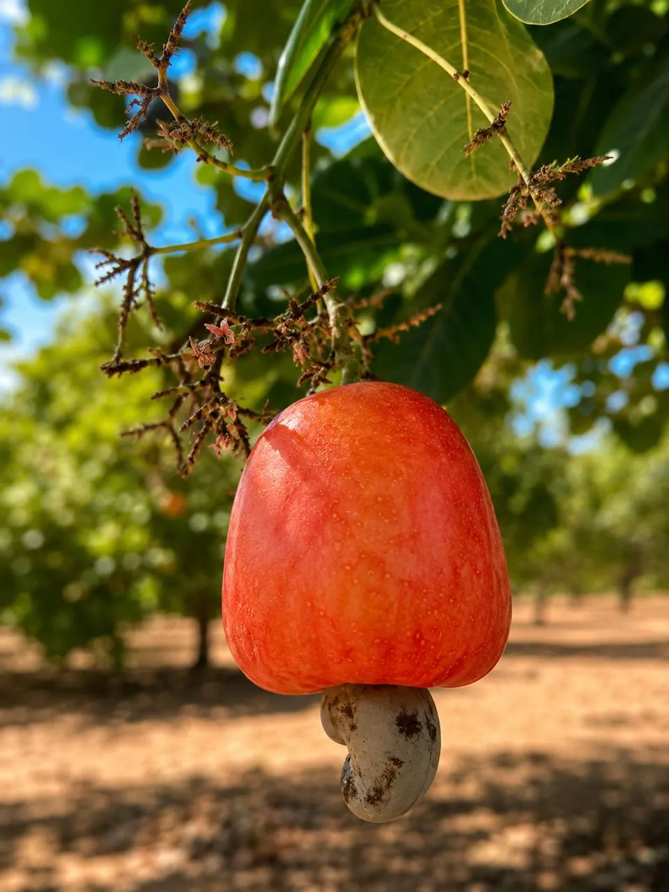
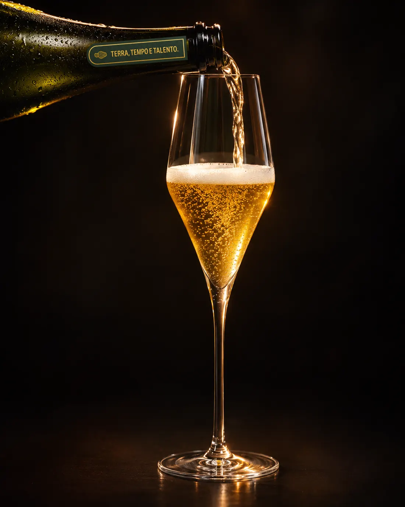
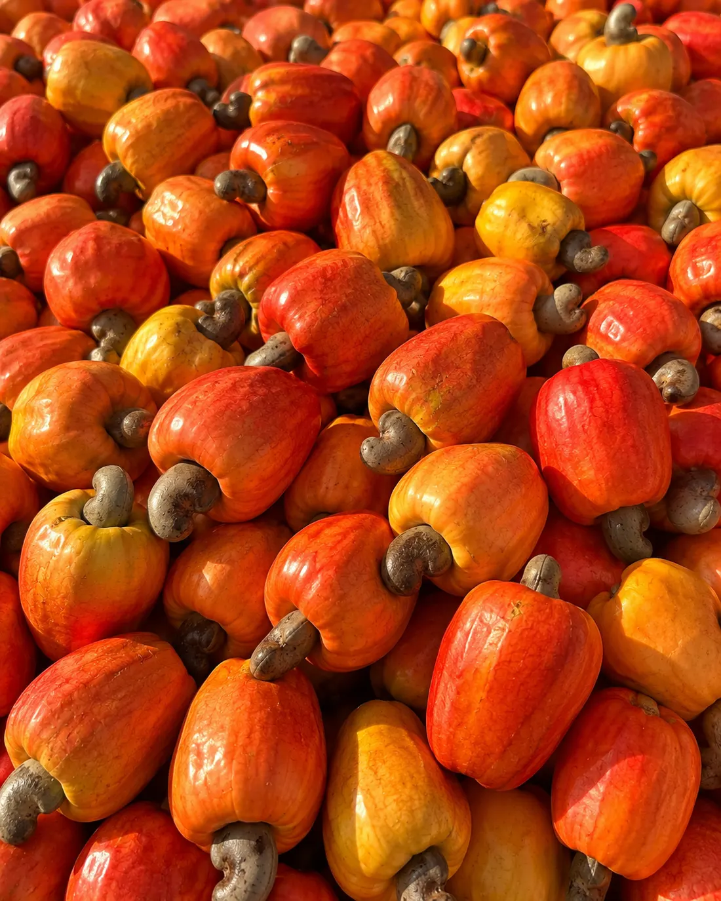
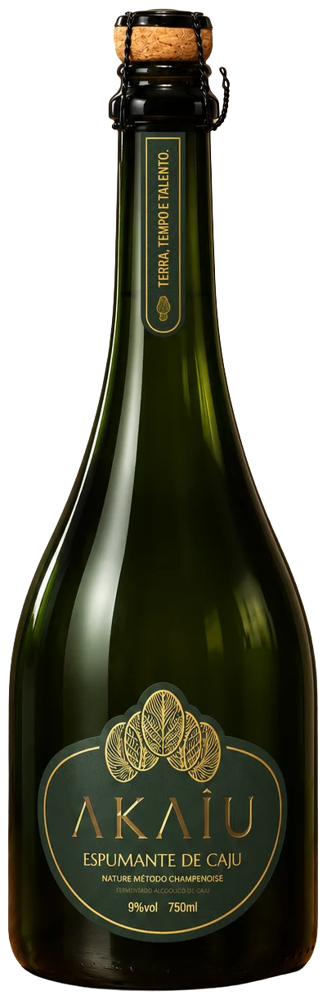
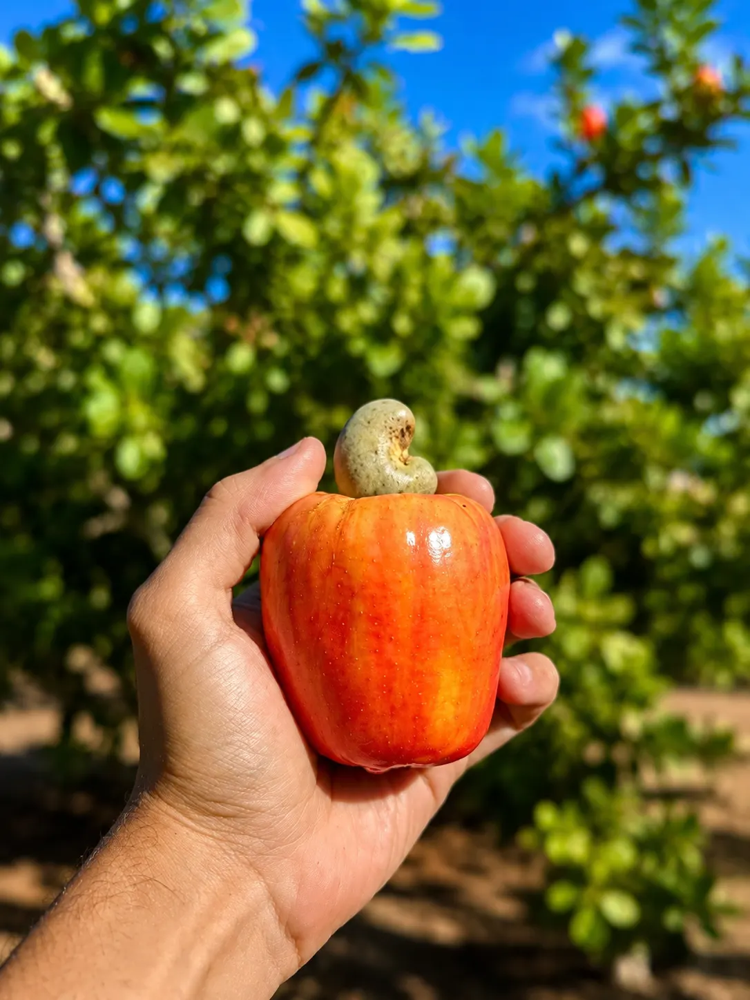

Colheita Seletiva
Os pedúnculos são selecionados no ponto ideal de maturação, quando o caju expressa todo o seu aroma.
Esta é uma experiência para adultos. Para continuar, confirme sua idade.
Terra, Tempo e Talento
Rio Grande do Norte · Brasil · 750ml · 9% volSomos fruto do sol e da brisa tropical.
Da terra que ensina paciência e transforma resiliência em sabor.
No caju, enxergamos mais do que um fruto: vemos origem, cultura e potência.
Vemos o Nordeste que inova, cria e prospera.
Unimos ciência e tradição, campo e arte, para transformar uma parte desse fruto,
por muito tempo subvalorizada, em símbolo de orgulho, sofisticação e impacto positivo.
Em cada garrafa, há o trabalho de quem cultiva, pesquisa e sonha.
Há o brilho dourado do sol e o frescor do caju.
AKAÎU é uma celebração que nasce do povo e volta para o povo.
Da terra fértil, o tempo colhe. Com talento, brindamos.
Nascido no Nordeste do Brasil, AKAÎU transforma o caju, fruto nativo e símbolo de resistência, em um espumante singular. É elaborado a partir do pedúnculo do caju pelo Método Tradicional (Champenoise): a segunda fermentação acontece na própria garrafa, onde o espumante descansa sobre as leveduras (sur lie) e chega à taça Nature, sem adição de licor de expedição.
Os cajus vêm do Rio Grande do Norte, no coração do Nordeste brasileiro, terra onde o cajueiro é nativo e faz parte da cultura e da economia de muitas famílias.
Mais que uma bebida, AKAÎU é um brinde à cultura brasileira, à inovação e ao impacto socioambiental positivo: valoriza produtores locais, contribui com a sustentabilidade e celebra o talento de quem transforma a terra e o tempo em sabor.


De raízes genuinamente brasileiras, é ideal para celebrar, de encontros simples a grandes momentos.
Amarelo-claro e brilhante, com perlage fina, viva e persistente.
Fresco e delicado, com notas adocicadas de cajuína e compota.
Seco e refrescante, de acidez equilibrada, toque mineral e final prolongado, que convida a um novo gole.
O AKAÎU é um convite para celebrar encontros, paisagens, sabores e histórias que merecem ser brindadas.


Cada garrafa de AKAÎU é resultado de escolhas cuidadosas, da seleção dos pedúnculos ao dégorgement. Um processo que valoriza o fruto, respeita o tempo e busca a excelência em cada detalhe.

Os pedúnculos são selecionados no ponto ideal de maturação, quando o caju expressa todo o seu aroma.

O suco do caju se transforma em vinho base, com o equilíbrio, o frescor e a estrutura que o espumante pede.

A segunda fermentação acontece na própria garrafa. Ali o espumante descansa sobre as leveduras por, no mínimo, dois meses, ganhando perlage fina e mais complexidade.

As garrafas são giradas e inclinadas aos poucos até os sedimentos se reunirem no gargalo (remuage). Depois eles são retirados (dégorgement), revelando um espumante límpido e brilhante.
No caju, vemos potencial onde poucos enxergavam valor.
O caju tem duas partes. A castanha, conhecida no mundo inteiro, é o fruto verdadeiro. Unido a ela está o pedúnculo, o chamado falso fruto: a parte suculenta e perfumada, por muito tempo pouco aproveitada. É dele que nasce o AKAÎU.
AKAÎU nasceu para revelar um potencial que por muito tempo permaneceu pouco reconhecido. Transformamos o caju, fruto nativo brasileiro, em uma experiência que gera valor para o território, orgulho para suas origens e novas possibilidades para quem vive do seu cultivo.
Unimos saberes do campo e ciência contemporânea para criar bebidas de excelência, que respeitam a terra, valorizam as pessoas e provam que sofisticação também pode ser partilha.


Valorizamos produtores e fortalecemos comunidades rurais, com uma cadeia produtiva mais justa e inclusiva.

Damos valor a um recurso historicamente subutilizado, reduzindo perdas e promovendo o aproveitamento integral do caju.

Levamos o Nordeste à mesa da alta gastronomia, com um brinde que celebra a diversidade de pessoas, lugares e momentos.
Por trás de cada garrafa existe uma rede de parceiros que compartilha nossa visão de inovação, excelência e valorização da biodiversidade brasileira.


Para dúvidas, parcerias comerciais, distribuição ou eventos, nossa equipe está à disposição para ouvir você.